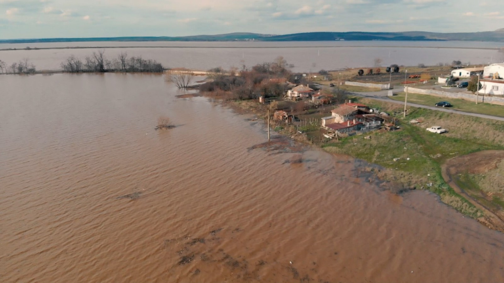
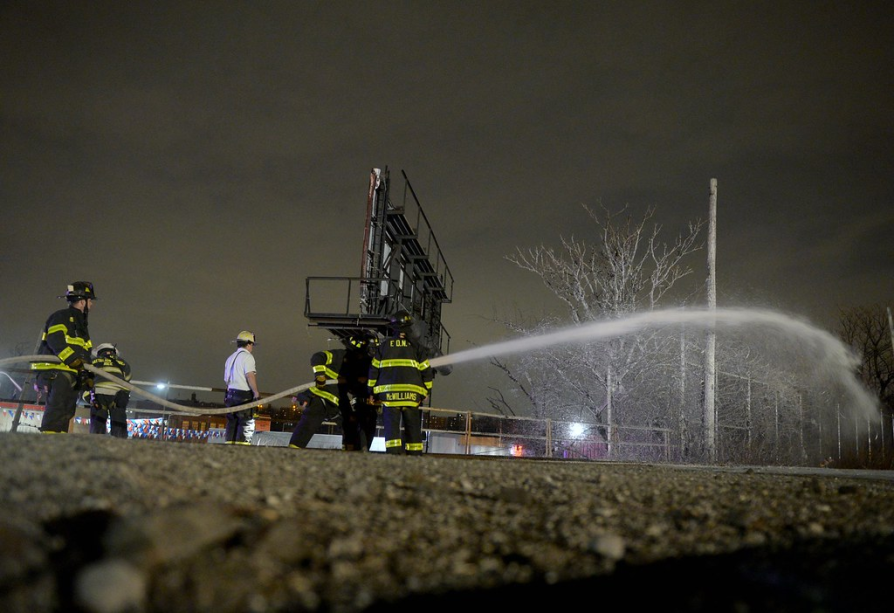
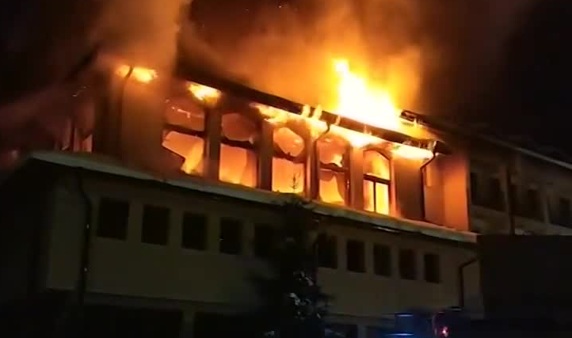
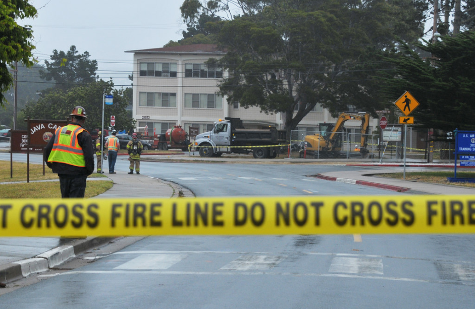

Flood in Dimchevo - Friday, 7th July 2020
Four fire trucks and about 25 firefighters were called in for several
flood reports in the village of Dimchevo. The road was flooded to a
depth of about 15 centimeters. The crews used sandbags to stop the
spread of the water and diverted it to the sewer after the water pipe
had exploded. The brigade was called at 15:59 and the incident ended
for the firefighters by 17:52.

Gas leak in Burgas, Meden Rudnik - Monday, 2nd November 2020
Five fire trucks and about 35 firefighters were called to a small fire
near a turnoff in Burgas. About 100 passengers were evacuated from the
site. Firefighters were there at 9:44 p.m., and the fire was contained
around 11:20 p.m.

A hotel in flames - Thursday, 14th January 2021
Four fire engines and around 25 firefighters were called to a fire at
a hotel in Troyan. Part of an electrical intake room in the basement
of the building was damaged by the fire. There were no reports of any
injuries.

Gas leak in Meden Rudnik - Saturday, 25th April 2021
Firefighters were called to a gas leak at a range of shops in Burgas,
Meden Rudnik. A gas main ruptured below ground level and gas leaked
into the basement of an adjacent premises. Around 150 people were
evacuated from buildings in the area and a 50m cordon was put in place
as a precaution.